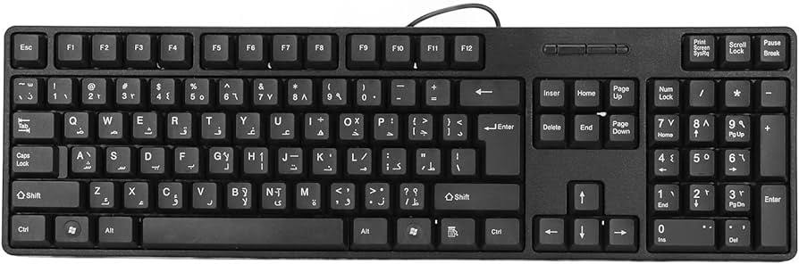
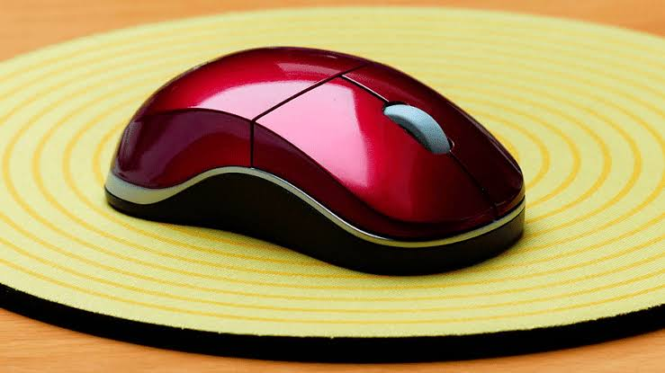
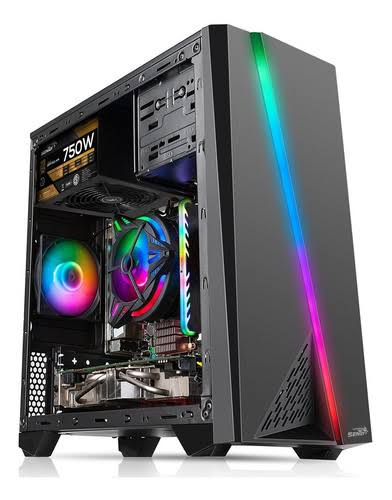
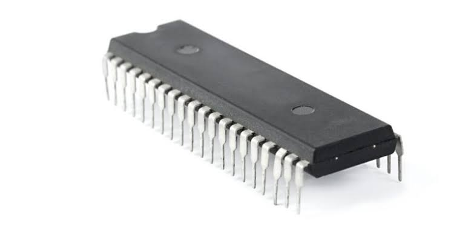

| Equipo - | PC |
| NOMBRE | IMÁGEN |
| *Monitor/Pantalla Un monitor es un periférico que muestra la información de forma gráfica de una computadora. Los monitores se conectan al ordenador a través de una tarjeta gráfica (o adaptador o tarjeta de video). |

|
| *Teclado El teclado es un dispositivo de entrada que utiliza una disposición de teclas para que actúen como interruptores electrónicos que envían información a la computadora. El teclado tiene entre 99 y 108 teclas y está dividido en cuatro bloques de funciones. |
 |
| *Mouse o ratón El mouse es un dispositivo de entrada diseñado para manipular objetos en la pantalla de la computadora y ayudarlo a usted, el usuario, a interactuar con la computadora. |
 |
| *Gabinete (cpu) Se trata de una extensión de espacio en la estructura de un monitor CRT o de una pantalla LCD, en la cual se alojan los diversos dispositivos funcionales del equipo de cómputo. |
 |
| *Tarjeta madre o motherboard La tarjeta madre es la columna vertebral que une los componentes de la computadora en un mismo punto y les permite comunicarse entre sí. Sin ella, ninguna de las piezas de la computadora, como el CPU, la GPU o el disco duro no podrían interactuar. |

|
| *Disipador de calor o ventilador El disipador de la CPU un elemento o pieza cuya misión es extraer el calor que genera el procesador. |

|
| *Memoria Ram La memoria de acceso aleatorio (RAM) es la memoria de la computadora que almacena la información que un programa necesita mientras se ejecuta. |

|
| *Memoria Rom La ROM es la memoria no volátil lo que significa que la información se almacena de forma permanente en el chip. La memoria no depende de la corriente eléctrica para guardar los datos. Al contrario, los datos se escriben en celdas individuales usando el código binario. |
 |
| *Disco duro El disco duro es el componente que almacena toda la información en la computadora, desde archivos hasta programas. |

|
| *Tarjeta de red Las tarjetas de red se encargan de preparar, transferir y controlar la información o datos que envía a los otros equipos que están conectados en una misma red, no se trata de solo ordenadores, también equipos como impresoras y discos duros externos pueden establecer una conexión. |

|
| *Bocinas Las bocinas te permiten escuchar diferentes clases de sonidos emitidos por la computadora, que en ocasiones indican algo en particular. |

|
| *Impresora La impresora es un periférico utilizado para imprimir información en papel, resultado del procesamiento de datos. |

|